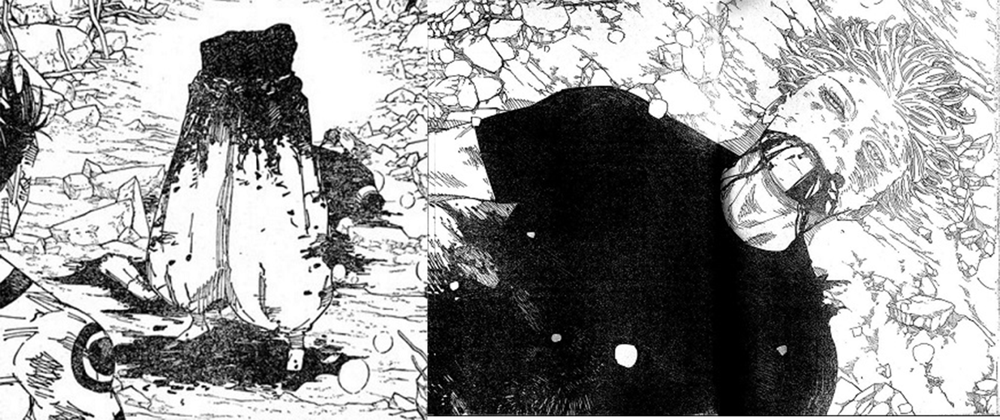
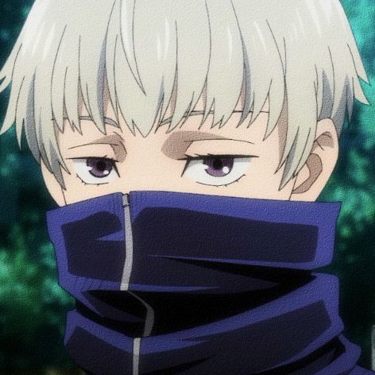
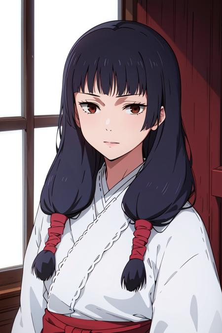
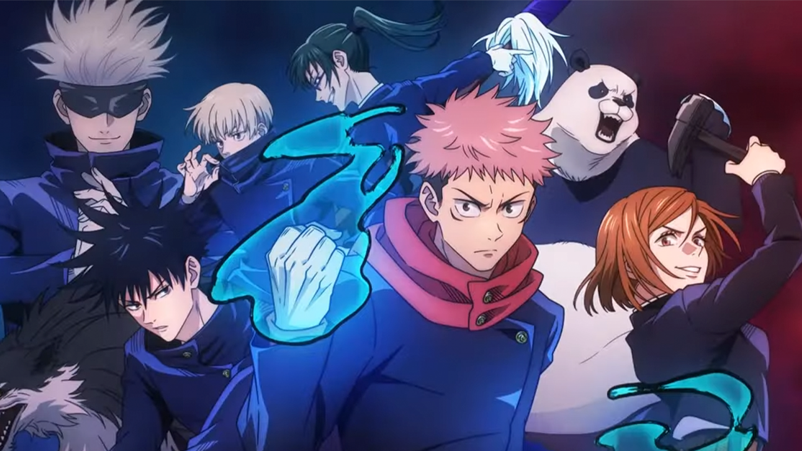

LISTS
1.Yuji/Sukuna
2.Gojo Satoru
3.Geto Suguru
4.Toge Inumaki
5.Megumi Fushiguro
6.Utahime Iori
7.Kasumi Miwa
yuji/sukuna
Yuji is a first-year Jujutsu Sorcerer at Tokyo Jujutsu High who is thrown into the world of sorcery after he ate a Cursed Object: a finger belonging to Ryomen Sukuna (宿儺, Sukuna), a powerful Cursed Spirit—a being manifested from Cursed Energy from the negative emotions flowing from humans.
Gojo
Satoru Gojo (五ご条じょう悟さとる Gojō Satoru) is one of the main protagonists of the Jujutsu Kaisen series. He is a special grade jujutsu sorcerer and widely recognized as the strongest in the world. Satoru is the pride of the Gojo Family, the first person to inherit both the Limitless and the Six Eyes in four hundred years. He works as a teacher at the Tokyo Jujutsu High and uses his influence to protect and train strong young allies.
UNFORTUNATELY....

Satoru Gojo cutted into half now....He successfully transform from Gojo(五条悟) to Half Gojo(二点五条悟)🤡
Suguru Geto hated non-sorcerers, usually referring to them as "monkeys". He felt sorcerers are the superior race and humanity's next stage of evolution. He was smug and extremely condescending towards normal humans, using fake personas to lure in vulnerable people who were cursed.

Toge Inumaki (狗いぬ巻まき棘とげ Inumaki Toge) is a major supporting character in Jujutsu Kaisen and one of the main protagonists of its prequel, Jujutsu Kaisen 0: Jujutsu High. He is a descendant of the Inumaki clan and has inherited the clan's cursed speech, which he's developed his own unique speech pattern for in order to avoid cursing others.
Back to top
 Megumi Fushiguro (伏ふし黒ぐろ恵めぐみ Fushiguro Megumi) is the deuteragonist of the Jujutsu Kaisen series. He is a grade 2 jujutsu sorcerer and first-year student at Tokyo Jujutsu High alongside Yuji Itadori and Nobara Kugisaki. Megumi is the step-brother of Tsumiki Fushiguro and as the son of Toji Fushiguro, Megumi is also a descendant of the Zenin Family. Megumi was born outside the clan as Toji's trump card and was eventually found by Satoru Gojo, who mentored him and enrolled him at Jujutsu High as his student.
Megumi Fushiguro (伏ふし黒ぐろ恵めぐみ Fushiguro Megumi) is the deuteragonist of the Jujutsu Kaisen series. He is a grade 2 jujutsu sorcerer and first-year student at Tokyo Jujutsu High alongside Yuji Itadori and Nobara Kugisaki. Megumi is the step-brother of Tsumiki Fushiguro and as the son of Toji Fushiguro, Megumi is also a descendant of the Zenin Family. Megumi was born outside the clan as Toji's trump card and was eventually found by Satoru Gojo, who mentored him and enrolled him at Jujutsu High as his student.
Back to top

Utahime Iori (庵いおり歌うた姫ひめ Iori Utahime) is a character in the Jujutsu Kaisen series. She is a semi-grade 1 jujutsu sorcerer and student supervisor at Kyoto Jujutsu High.
Back to top
 Kasumi is a second-year at Kyoto Jujutsu High. She comes from a poor family and has two younger brothers. When in Junior High, she met a mentor who would train her to become a jujutsu sorcerer.
Kasumi is a second-year at Kyoto Jujutsu High. She comes from a poor family and has two younger brothers. When in Junior High, she met a mentor who would train her to become a jujutsu sorcerer.
Back to top

Back to top